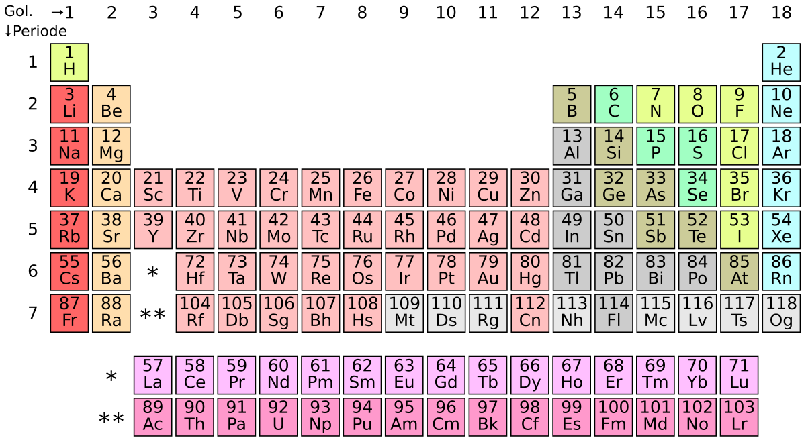

Apa Itu Natrium Klorida?
Natrium klorida (NaCl), lebih dikenal sebagai garam dapur, adalah senyawa ionik yang terdiri dari unsur natrium (Na) dan klorin (Cl). Senyawa ini merupakan komponen utama dalam garam yang dikonsumsi sehari-hari dan memiliki peran vital dalam berbagai proses biologis.
Table Periodik
Sejarah Singkat
Garam telah menjadi komoditas berharga sejak zaman kuno. Peradaban Romawi bahkan membayar para prajurit mereka dengan garam (asal kata "salary"). Sepanjang sejarah, garam digunakan sebagai pengawet makanan dan mata uang pertukaran.
Sifat Fisik dan Kimia
| Sifat | Nilai |
|---|---|
| Rumus Kimia | NaCl |
| Massa Molar | 58,44 g/mol |
| Penampilan | Kristal padat putih |
| Titik Leleh | 801 °C |
| Titik Didih | 1413 °C |
| Kelarutan dalam Air | 359 g/L (pada 20°C) |
Pembentukan NaCl
Natrium klorida terbentuk melalui reaksi kimia antara unsur natrium dan klorin. Kedua unsur ini sangat reaktif dan berbahaya dalam bentuk murninya:
Natrium (Na)
Logam alkali yang sangat reaktif. Dalam keadaan murni, natrium adalah logam lunak keperakan yang bereaksi keras dengan air, menghasilkan hidrogen yang dapat meledak.
Klorin (Cl₂)
Gas beracun berwarna hijau kekuningan yang bersifat korosif dan dapat mematikan jika terhirup. Digunakan sebagai senjata kimia selama Perang Dunia I.
Proses Ikatan Ionik
Natrium melepaskan satu elektron dari kulit terluarnya, membentuk ion Na⁺. Klorin menerima elektron tersebut, membentuk ion Cl⁻. Daya tarik elektrostatis antara ion-ion yang berlawanan muatan ini menciptakan ikatan ionik yang kuat, menghasilkan senyawa NaCl yang stabil.
Struktur Kristal
NaCl membentuk struktur kristal kubus berpusat muka (face-centered cubic), di mana setiap ion natrium dikelilingi oleh enam ion klorida, dan sebaliknya.
Struktur ini sangat stabil dan menjelaskan mengapa NaCl memiliki titik leleh yang tinggi dan membentuk kristal kubus yang sempurna.
Kegunaan Natrium Klorida
- Bahan Pangan: Bumbu masak dan pengawet makanan
- Kesehatan: Membantu menjaga keseimbangan cairan tubuh dan fungsi saraf
- Industri: Bahan baku produksi soda api, klorin, dan hidrogen
- Pertanian: Pupuk dan pakan ternak
- Transportasi: Pencair es di jalan raya selama musim dingin
- Pengolahan Air: Regenerasi resin penukar ion pada proses pelunakan air
Efek Kesehatan
Meskipun essential untuk kesehatan, konsumsi berlebihan NaCl dapat menyebabkan:
- Hipertensi (tekanan darah tinggi)
- Peningkatan risiko penyakit kardiovaskular
- Retensi cairan dalam tubuh
- Gangguan fungsi ginjal
Organisasi Kesehatan Dunia (WHO) merekomendasikan konsumsi kurang dari 5 gram garam per hari untuk orang dewasa.
Simulasi Reaksi Pembentukan NaCl
Klik tombol di bawah untuk melihat bagaimana natrium dan klorin bereaksi membentuk natrium klorida:
Fakta Menarik tentang Garam
Garam digunakan sebagai metode pembayaran (asal kata "salary" dalam bahasa Inggris)
Garam menjadi komoditas berharga yang diperdagangkan sepanjang Jalur Garam di Eropa
Garam beryodium pertama kali diperkenalkan untuk memerangi gondok
Produksi garam global mencapai lebih dari 280 juta ton per tahun